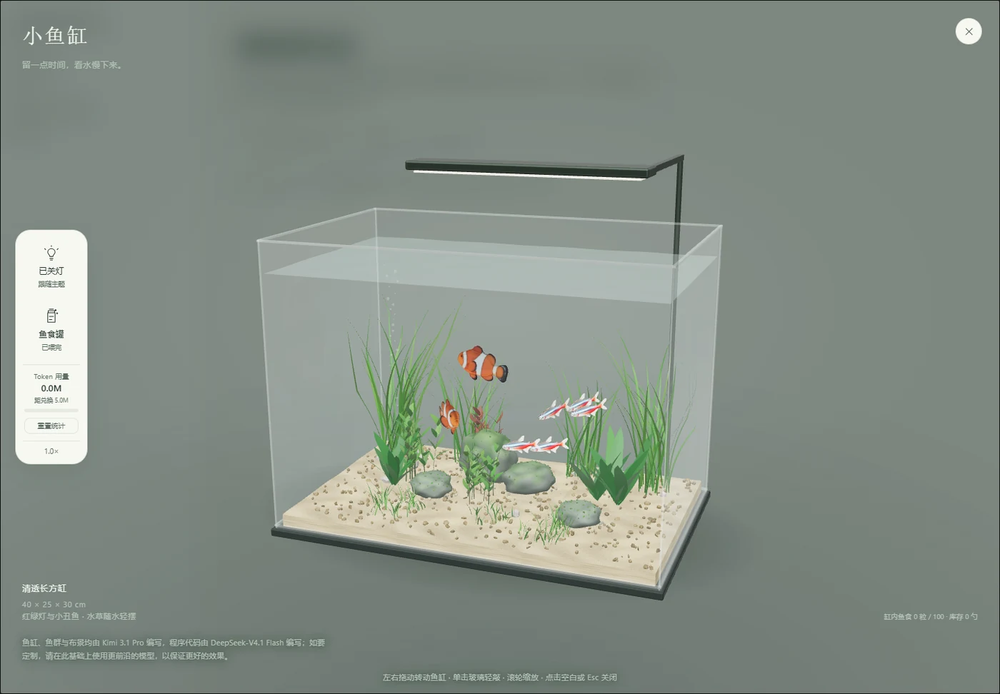
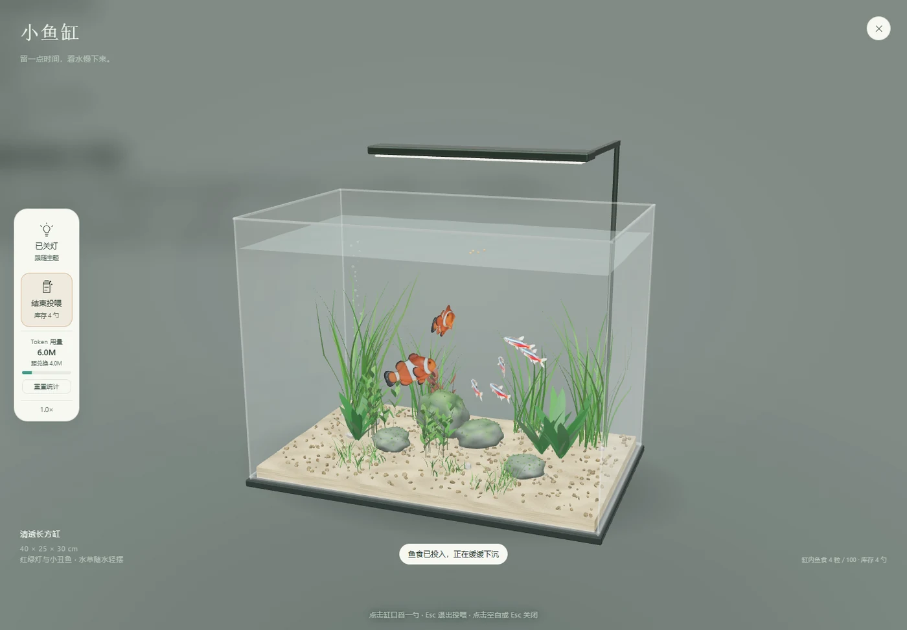
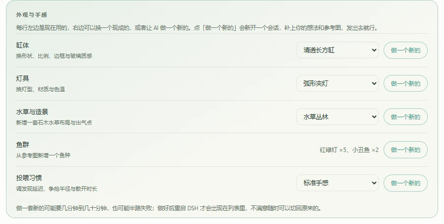
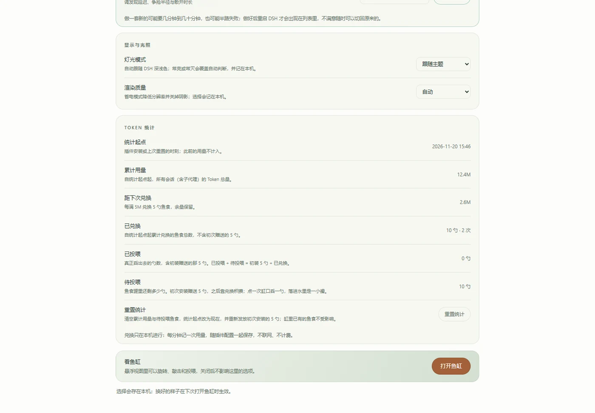

FULLSCREEN
铺满窗口的一只玻璃缸
点右下角的圆形入口进入，画布铺满整个窗口，底部只留一行操作提示。拖动让缸体绕竖直轴旋转，滚轮从 1.0× 放大到 2.2×，放大后画面沿圆形边界模糊收边。
DSH 桌面工作台里的透明三维鱼缸。左侧导航多一页「定制」，右下角多一个圆形入口——点进去是铺满窗口的玻璃缸：拖动旋转、滚轮放大到 2.2×、单击玻璃惊鱼，再舀一勺鱼食喂它们。鱼食不吃白食，Token 每满 5M 换 5 勺，装好先送 5 勺。
$ dsh plugin --profile desktop add dsh-tiny-fish

观赏、投喂、定制、对账，各自有各自的入口。下面是真实宿主里截下来的界面，不是设计稿，也没有后期合成。
点右下角的圆形入口进入，画布铺满整个窗口，底部只留一行操作提示。拖动让缸体绕竖直轴旋转，滚轮从 1.0× 放大到 2.2×，放大后画面沿圆形边界模糊收边。

点一次缸口只舀一勺，落进水里是 4 粒一小撮。鱼按距离在 0.3～1 秒内错峰聚拢，共享目标但用不同接近角度，同一颗粒只会被吃一次；吃空后分组散开。

侧栏那一页叫「定制」，只有三块：外观与手感、显示与光照、Token 统计。五个维度各一行，右边能换一个现成的，或点「做一个新的」把需求交给 AI。

已兑换、已投喂、待投喂，单位都是勺。统计写在插件配置里，重启、换窗口都不清零；投放即刻落盘，不会把喂过的鱼食退回来。
没有按钮墙，也没有面板堆叠。全屏里只有四个动作，其余交给鼠标；操作提示常驻在底部一行。
缸体绕竖直轴旋转，水面产生延迟、可衰减的晃动，松手后慢慢停下。
滚轮或 + − 以当前尺寸为最小，放大到 2.2×；放大后画面沿圆形边界模糊收边。
出现局部敲击光圈，鱼群按距离错峰受惊、远离敲击点急逃，约 1～3 秒平复。
舀一勺、落 4 粒，库存减一勺；喂完提示「鱼食已喂完」，攒够 5M 自动补 5 勺。
Token 用量在本地换成鱼食：每满 5M 换 5 勺，新装先送 5 勺。全程离线、不计费，也不上传任何数字。
三个数随时能手算核对。「重置统计」需二次确认（5 秒内再点一次），清空累计与待投喂、重新发放 5 勺初装；缸里已有的鱼食不受影响。
五个维度各有一个「做一个新的」。点了就跳到新会话，草稿只有三样东西：两个 /skill token、一句需求、一个批次号。
内置是 40 × 25 × 30 cm 的清透长方缸。想要圆角、异形、更厚的玻璃或更暗的边框，说清楚外形、材质与配色，参考图直接拖进会话。
tinyfish-custom-core + tinyfish-custom-tank内置是弧形夹灯，跟随宿主深浅色自动判断开灭。定制灯具只改 spot 参数——灯型、材质、色温——不新增光源，不会把缸里的明暗关系搞乱。
tinyfish-custom-core + tinyfish-custom-lamp内置苔藓石景、水草丛林、沉木疏林三套。定制版按你给的布局重排，水草保留根部固定的摆动；鱼群会按新的占位数据避让。
tinyfish-custom-core + tinyfish-custom-scape内置红绿灯 ×5 与小丑鱼 ×2。定制鱼按静态 GLB 走体检登记，泳姿由顶点行波统一驱动，因此不接受自带动画剪辑的资产；每条 1～6 尾，挂在内置鱼种之后。
tinyfish-custom-core + tinyfish-custom-fish想让鱼更急一点，或更慢条斯理一点，改的是行为权重：发现延迟、争抢半径、散开时长。切换时只改参数，不重建场景。
tinyfish-custom-core + tinyfish-custom-feeding/tinyfish-custom-core /tinyfish-custom-tank 帮我给鱼缸换一个新缸体。 外形（方缸 / 圆角 / 异形）： 材质与配色： 参考图（拖进本会话）： （批次 loyw3v28-tank：这段内容重复出现时只做一次）
在已安装 dsh 的环境里执行一条命令，重启一次。想用 AI 定制工厂，再走源码那条。
# 一条命令，装完重启 DSH
dsh plugin --profile desktop add dsh-tiny-fish
git clone https://github.com/329604421/dsh-tiny-fish.git cd dsh-tiny-fish && npm install && npm run build dsh plugin --profile desktop add "$PWD"
--profile 要填本机真实存在的名字。先看一眼 ls ~/.dsh/profiles/：桌面版是 desktop，命令行版是 web。填错不会报错，只会静默建一个空 profile 并装进去——表现就是「装上了，但界面里什么都看不见」。
装完重启 DSH：桌面版 Ctrl+R，或退出重开。左侧导航出现鱼缸图标，右下角出现圆形入口。替换版本后也必须重启。